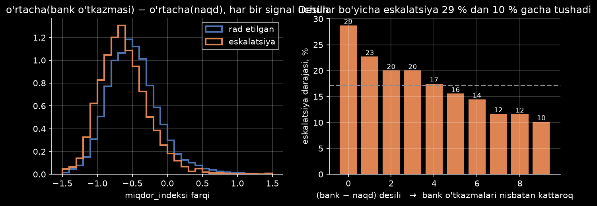
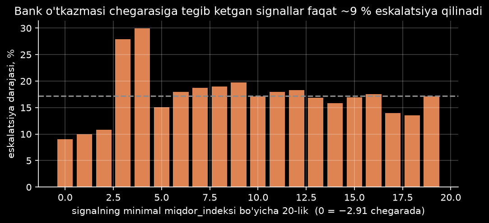
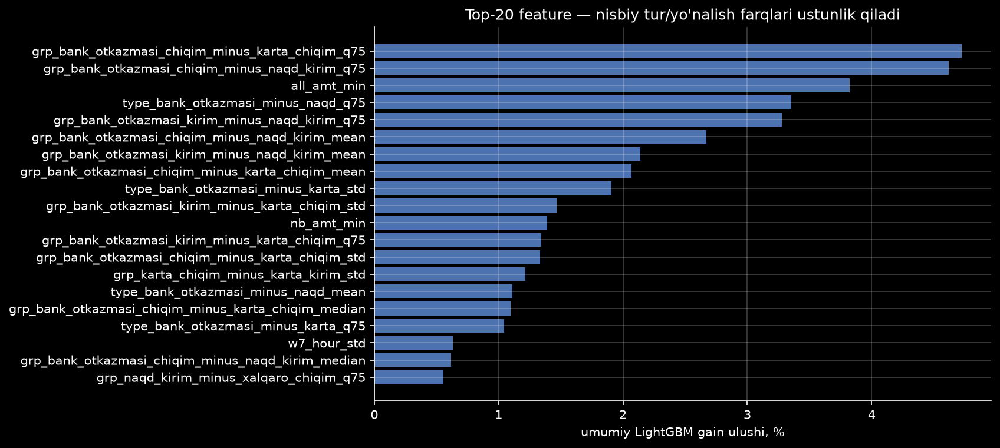
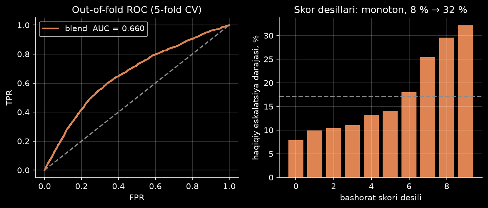

Qaysi alert tekshiruvga yuboriladi? yondashuv, maqola retsepti, bitta javob: mijozning o'z tranzaksiya turlari orasidagi nisbat.
kunlik tranzaksiya tarixi → eskalatsiya ehtimoli. Metrika ROC-AUC.
vaqt · kirim/chiqim · tur · hajm indeksi
xavfli alertlar ro'yxat boshida
eng kuchli bitta feature: AUC
eskalatsiyaOylik : shovqin. Sana ma'lumot bermaydi.
| Signal bo'yicha o'rtacha | Rad etilgan | Eskalatsiya | Farq |
|---|
Klassik AML belgilari tekshirildi. Pastga siljing.
Zichliklar ustma-ust. Farq shaklda: gistogramma featurelari AUC.
Farq faqat bank o'tkazmalarida: .
/ kun. Ikkala sinfda bir xil: AUC .
Har katakda 1.0 ± . Tungi faollik: signal yo'q.
10 teng guruh, har birining haqiqiy eskalatsiya darajasi.
Chegarada , sal yuqorida . Nomonoton.
nisbiy feature. Top-10 ning tasi shu oiladan.
all_amt_min.Har retsept shu datasetda, bir xil -fold CV. Iqtiboslar asl nusxada.
To fit the model, we use the machine learning library XGBoost. … the maximum and total amount, and the number of transactions of each of almost 30 different transaction types.
The top-performing model was a LightGBM … The aggregation functions include sum, mean, minimum, maximum, and count. We also compare aggregations over two time windows using ratios and differences.
…leverages recursive feature elimination with cross-validation for optimal feature selection. Subsequently, Optuna is employed to fine-tune hyperparameters for the XGBoost model.
…innovative methods such as graph analysis and anomaly detection were suggested to overcome the limitations of rule-based systems.
DNB va Feedzai retseptlari bizda pastroq: ularda nisbiy tur farqlari yo'q. Anomaliya ≠ eskalatsiya.
Bir xil -fold CV. Manba: outputs/experiments.csv, outputs/experiments_papers.csv.
Loglar fayldan so'zma-so'z: outputs/train_log.txt, outputs/exp_papers.log, outputs/gru_training.log.
notebooks/01_eda.ipynb grafiklari


